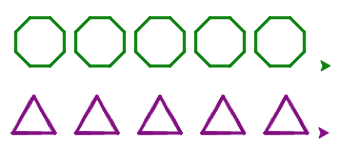
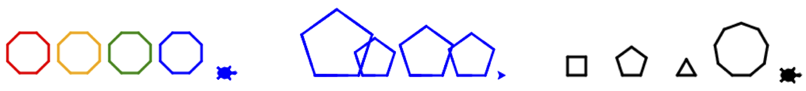
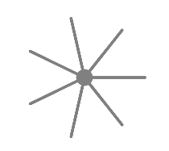
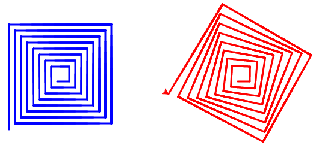

10.11. Exercises: Functions¶
If your teacher added you to a Trinket course, complete the exercises there.
Otherwise, use the links below to code in your own free account.
Note
The code editors embedded in the exercises all include a link to repl.it in the upper right corner. For the matching Trinkets, click these links:
10.11.1. Part A: More Turtles¶
Use a loop and the
draw_squarefunction we wrote in this chapter to draw the image shown below. Make each side 30 units long, and note that the turtle moves away from the last square.(Check the Turtle Appendix if you need to review the turtle methods).
In the editor above, define a new function called
draw_polygonthat takes 3 parameters—a turtle object, a number of sides, and the length of each side. Place the new function in the lines beforebob = turtle.Turtle().Hint: You drew polygons as part of the Turtle Project in the Loops chapter.
After you finish coding the function, replace the
draw_squarefunction call in the loop withdraw_polygonto produce a row of shapes.Two possible outcomes from using
draw_polygon.¶Try It!
Just for fun, modify your loop code to produce shapes with different colors, sizes, or sides.
Write a function called
draw_spritethat draws a figure like the one shown below. The function needs parameters for the turtle, the number of legs, and the length of the legs.Call the function to create a sprite with 10 legs of length 115.
Try It!
Add a parameter to
draw_polygoncalledfancy_corners. IfTrue, then the function should calldraw_spriteat each corner of the shape. Make the sprite legs half the length of each side.
{kind=link}
10.11.2. Part B: Return Values¶
Write a
shift_casefunction that takes a single string parameter and returns a different string. The function should loop through the string and change uppercase characters to lowercase, and lowercase to uppercase.For example, for the argument
'Hello, World!', the function returns'hELLO, wORLD!'.Write a
calculate_averagefunction that uses a list of numbers as the parameter. The function should find and return the average of the numbers from the list. Use theround()function to return an average rounded to one decimal place.Sample results:
- num_list = [2, 7, 6], average = 5.0
- num_list = [20, 17, 46, 8], average = 22.8
- num_list = [0, 3.33, 44, 50, 63, 70.9, 75.2, 83.2], average = 48.7
Note
average = (sum of the elements in list) / (number of elements in list)
Write a function
make_line(num_chars, symbol)that returns a line with exactlynum_charssymbols.num_charswill be an integer, andsymbolwill be a character. Note that the function must RETURN a string, not print it!If the function call does not provide an argument for
symbol, use the default character'#'.print(make_line(5, 'T')) print(make_line(8))
Console Output
TTTTT ########
In the editor above, add a function called
make_rectanglethat returns a rectangle string with a given width, height, and symbol. The function should NOT print each row of the rectangle. Instead, it must return a single string that contains the entire rectangle shape.Tips
- Call your
make_linefunction to create each row of the rectangle string. - The newline character,
\n, will be helpful to you. - Do NOT include a newline character at the end of your string.
- Use
'#'as the default symbol.
print(make_rectangle(5, 3)) print(make_rectangle(2, 4, '*'))
Console Output
##### ##### ##### ** ** ** **
- Call your
In the same editor, code a
make_squarefunction that callsmake_rectangle. The function should behave something like this:print(make_square(4)) print(make_square(3, 'Rutabaga'))
Console Output
#### #### #### #### RutabagaRutabagaRutabaga RutabagaRutabagaRutabaga RutabagaRutabagaRutabaga
10.11.3. Bonus Exercises¶
Add a
draw_spiralfunction to one of the turtle editors to produce either of the following shapes. Hint: The function needs a turtle, an angle, a starting line length and the number of lines to draw.The spiral on the left uses an angle of 90°, while the one on the right uses an angle of 89°.¶
Add functions to the editor in part B, exercise 6 to produce any of the following shapes:
# ## ## #### ### ###### #### ######## ##### ########## # ## ### ### ## #